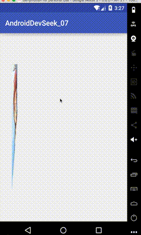

第七章: 了解动画并去自定义动画, 在一些场景有哪些注意事项
View动画
View动画作用的对象是View, 它支持四种动画效果平移, 缩放, 旋转, 透明. 除了这四种典型的变化效果. 帧动画也属于View动画.
View动画的种类
View动画的四种变换效果对应着Animation的四个子类:TranslateAnimation, ScaleAnimation, RotateAnimation和AlphaAnimation.
对于View动画建议采用XML来定义动画
| 名称 | 标签 | 子类 | 效果 |
|---|---|---|---|
| 平移动画 | <translate> |
TranslateAnimation | 移动View |
| 缩放动画 | <scale> |
ScaleAnimation | 放大或者缩小View |
| 旋转动画 | <rotate> |
RotateAnimation | 旋转View |
| 透明度动画 | <alpha> |
AlphaAnimation | 改变View的透明度 |
创建的动画的xml文件. 是放在res/anim这个文件夹下的. View动画描述文件的固有语法如下
|
关于动画我们可以只设置一种也可以设置多种的组合.
set标签对应着AnimationSet类, 标签中的属性的意义:
- shareInterpolator 表示集合中的动画是否和集合共享一个插值器. 如果集合不指定插值器, 那么子动画就需要单独制定所需的插值器或者使用默认值
- fillAfter 是否保留动画结束之后的状态
translate标签表示平移动画, 对应着TranslateAnimation类
属性值的意义就是from开头的为开始起点, to开头的结束点
scale标签表示缩放动画, 对应着ScaleAnimation类
属性值的意思from开头的表示开始时原图缩放的百分比. 用浮点数表示1表示100%(无变化),0.5表示50%(原来的一般), 2表示200%(原来的两倍). to开头的表示结束时的百分比. pivot表示缩放的轴点.
rotate标签表示旋转动画, 对应着RotateAnimation类
fromDegrees旋转的开始角度, toDegrees旋转的结束角度. pivot旋转的轴点
alpha标签表示透明度动画, 对应AlphaAnimation类
fromAlpha表示透明度的起始值, toAlpha表示透明度的结束值.
上面这些标签还有一些通用的属性值. 例如duration执行时间.
xml如果声明了之后那么我们就该在代码中应用了. 如下:
View btn_main = findViewById(R.id.parent); |
同样也可以不需要xml直接在代码中生成动画对象.
AlphaAnimation alphaAnimation = new AlphaAnimation(1, 0); |
在开始动画之前可以给动画添加一个监听setAnimationListener()这样在动画开始结束和每一次循环下一次的时候都可以在回调方法中监听到.
自定义View动画
如果需要自定义View动画, 首先应该继承Animation这个抽象类来派生出一种新动画. 然后重写initialize()和applyTransformation()方法. 在initialize中做一些初始化动作, 在applyTransformation()中进行相应矩阵变换, 很多时候需要采用Camera来简化矩阵变换的过程. 而View动画变化主要就是矩阵的变换过程.
这里举一个Android中ApiDemo的一个自定义View动画. 大概效果就是这样可以参照官网的api也可在包中的MyRotateAnimation

帧动画
帧动画是顺序播放一组预先定义好的图片, 类似于电影. 系统提供了AnimationDrawable来使用帧动画.
同样在xml中声明, 在res/drawable/包下创建文件, 并替换每个drawable图片即可
|
将上述的Drawable作为View的背景并通过Drawable来播放动画.
AnimationDrawable background = (AnimationDrawable) iv_main.getBackground();background.start(); |
View动画的特殊使用场景
前面介绍的View动画都是作用在某一个View对象上的. 还可以针对ViewGroup控制其子元素. 或者针对Activity切换的动画.
LayoutAnimation
LayoutAnimation作用于ViewGroup上的. 为ViewGroup指定一个动画, 这样当它的子元素出场时都会具有这种动画效果. 常用的使用场景是在ListView和GridView. 使用很简单步骤如下.
- 在
res/anim/文件夹下创建xml文件.
|
delay: 子元素开始动画的延迟时间, 传入值是浮点值. 1为100%. 例如如果是0.5 入场动画周期为300ms(下面关联动画的duration时间), 那么每个子元素都需要延迟150ms才能播放入场动画. 而且这个时间会根据item的递增而增加. 比方说第一个为延迟150ms, 第二个就是300ms依次类推.
animationOrder: 子元素动画的顺序, 有三种选择normal,reverse,random. reverse表示排在后面的元素先执行入场动画. random随机子元素执行动画.
animation: 为子元素指定具体的入场动画. 里面放的就是针对View的animation动画的xml
layoutAnimation声明完成之后, 在要作用的ViewGroup标签中增加android:layoutAnimation:"@anim/xxx"进行关联即可. 同样也可以通过代码创建LayoutAnimation类来实现.
//获得子元素需要执行的View动画 |
Activity的切换效果
Activity默认是有一种切换效果的. 如果需要自定义切换效果, 主要用到overridePendingTransition()这个方法, 这个方法必须在startActivity()或者finish()之后调用才会生效
需要的形参有两个, 第一个是被打开时候所需的动画资源id, 第二个是被暂停时,所需的动画资源id.
= =. 这里有问题, 试了半天不好使, 就没写具体步骤….
属性动画
属性动画是API新加入的特性, 和View动画不同, 它对作用对象进行了扩展, 属性动画可以对任何对象做动画. 属性动画不再像View动画那样只能支持四种简单的交换 . 属性动画中有valueAnimator. ObjectAnimator, AnimatorSet等概念
使用属性动画
属性动画可以对任何对象的属性进行动画而不仅仅是View, 动画默认时间间隔为300ms, 默认帧率10ms/帧. 可以达到的效果为: 在一段时间间隔内完成对象从一个属性值到另一个属性值的改变. 属性动画是从API11增加的.
如: 改变一个对象的背景色属性, 典型的改变View的背景色, 下面的动画可以让背景颜色的渐变, 动画会无限循环而且会有反转效果.
ObjectAnimator colorAnim = ObjectAnimator.ofInt(activity_main, "backgroundColor", 0xffffa000, 0xffffa0ff); |
效果这样:

动画集合,5秒内对View旋转平移缩放透明
AnimatorSet animatorSet = new AnimatorSet(); |
也可以使用xml的形式形式来声明
理解插值器和估值器
TimeInterpolator时间插值器, 作用是根据时间流逝的百分比来计算当前属性值改变的百分比. 系统预置的有
LinearInterpolator(线性插值器:匀速动画)AccelerateDecelerateInterpolator(加速减速插值器:动画两头慢中间快)DecelerateInterpolator(减速插值器:动画越来越慢)
TypeEvaluator 类型估值算法, 也叫估值器. 作用是根据当前属性改变的百分比来计算改变后的属性值. 系统预置的估值器有
IntEvaluator整形估值器FloatEvaluator浮点型估值器ArgbEvaluatorColor属性估值器
属性动画中的插值器和估值器都很重要, 他们是实现非匀速动画的重要手段
属性动画要求对象的该属性有set``get方法. 插值器和估值器算法除了系统提供的外. 也可以自定义. 实现方式也很简单, 因为插值器和估值算法都是一个接口, 且内部都只有一个方法, 我们只要派生一个类实现接口接可以. 具体就是: 自定义插值器需要实现Interpolator或者TimeInterpolator. 自定义估值算法需要实现TypeEvaluator
属性动画的监听器
属性动画提供了监听器用于监听动画的播放过程 主要有两个接口AnimatorUpdateListener和AnimatorListener接口.
AnimatorListener通过接口的定义可以看出, 监听了动画的开始,结束,取消,以及重复播放. 系统为了方便开发提供了AnimatorListenerAdapter类. 他是AnimatorListener的适配器. 这样就不需要非得实现四个抽象方法而是按照我们的需要选择复写.AnimatorUpdateListener比较特殊, 他会监听整个动画过程, 动画是由许多帧组成的. 每播放一帧onAnimationUpdate就会被调用一次
对任意属性做动画
问题: 如果需要把一个button控件的宽增加200px. 应该怎么做?
View动画只是支持四种基本的属性操作, 而Scale只是缩放. 并且还会对内容进行拉伸并且伴随着y轴的增加. 所以属性动画在这里就可以派上用场. 但是如果直接对width属性进行修改那么不会有效果. 分析一下:
属性动画的原理: 属性动画要求动画作用的对象提供该属性的get和set方法, 属性动画根据外界传递的该属性值的初始值和最终值, 以动画的效果多次调用set每次set的值也是不同. 最终达到终点值.
所以要让动画生效应该满足两个条件:
- 必须提供
setXXX()方法, 如果动画没有传递初始值还要提供getXXX()方法. 这样系统在需要初始属性的时候在取值时不会因为没有getXXX()而发生Crash. - set修改的值必须能改通过某种形式反映出来, 比如会带来UI的改变. (如果不满足这条,动画无效果但不会Crash)
那Button本身具备setWidth()为什么会无效果. 这是因为虽然Button提供了方法, 但是这个setWidth()方法并不是改变视图大小的, 他是TextView新添加的方法, View却没有这样的方法. 而setWidth()方法的内部,作用不是设置View的大小, 而是设置TextView的最大宽度和最小宽度, 这个和TextView的宽是两个东西. 这样说控件的宽度对应xml中的layout_width, 而setWidth()对应的就是xml中的width属性. 所以综合上述原因, 满足条件一而不满足条件二.
官网文档中给出了三种解决方案:
- 给你的对象加上get和set方法, 如果你有权限的话.
- 用一个类来包装原始对象, 间接为其提供get和set方法.
- 采用valueAnimator, 监听动画过程,自己实现属性的改变.
- 虽然简单但是没有权限去SDK内部实现去
- 可以创建一个内部包装类创建set(),get()方法对View的
LayoutParams.width进行修改. - 采用
ValueAnimator, 监听动画过程, 自己实现属性改变.ValueAnimator本身不作用于任何对象. 但是他可以对一个值做动画. 通过对每个值的分配并会回调函数返回此值, 可以手动进行实现.
属性动画的工作原理
前面说过, 说属性画要求作用的对象提供该属性方法set方法, 属性动画根据传递的该属性的初始值和最终值, 以动画的效果多次去调用set方法. 每次set方法时候传递的值都是不一样的. 也就是随着时间的推移所传递的值会越来越接近终点值.
源码分析: 针对ObjectAnimator的start()为入口
|
这段代码主要就是取消和当前动画相同的动画. 最开始判断了当前动画,等待动画,延迟动画是否有一致的. 如果有那么就给取消. 最后调用了父类方法. 因为ObjectAnimator继承了ValueAnimator,所以继续看一下父类的start()
private void start(boolean playBackwards) { |
属性动画需要运行在有Looper的线程中, 最终会调用AnimationHandler.start()方法. AnimationHandler并不是Handler, 他是一个Runnable. 后面会调到JNI层, 然后JNI层还会调回, 然后run方法会被调用, 这个Runable涉及和底层的交互. 略过. 看重点.
ValueAnimator的doAnimationFrame()方法, 内部最后调用了animationFrame()方法,而animationFrame()内部调用了animateValue()方法
void animateValue(float fraction) { |
看到了calculateValue()方法, 这个就是计算每帧动画所对应的属性的值, 然后看一下set,get方法. 比如之前说的如果没有初始值, 则调用get方法等.. 查看PropertyValuesHolder类的setupValue()
private void setupValue(Object target, Keyframe kf) { |
当动画的下一帧到来的时, setAnimatedValue()方法会将新的属性值给对象, 调用其set()方法.同样set也是反射调用
void setAnimatedValue(Object target) { |
使用动画的注意事项
- OOM问题: 在帧动画时候容易发生
- 内存泄漏: 如果有无限循环的属性动画, 在界面退出的时候一定要停止动画 ,否则activity会无法释放. 而View动画并不存在此问题.
- 兼容性问题: 主要是3.0以下系统
- View动画问题: 因为是对原始View做的影像效果. 并未真正改变View. 所以在动画完成之后.无法GONE掉. 这个时候调用
view.clearAnimation()清除View效果即可 - 不要使用px
- 动画交互. 系统3.0之前无论是属性动画还是View动画新的位置都无法触发单击事件.需要注意
- 硬件加速的使用
第8章 理解Window和WindowManager